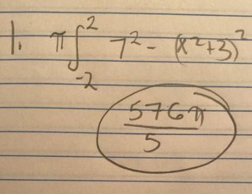
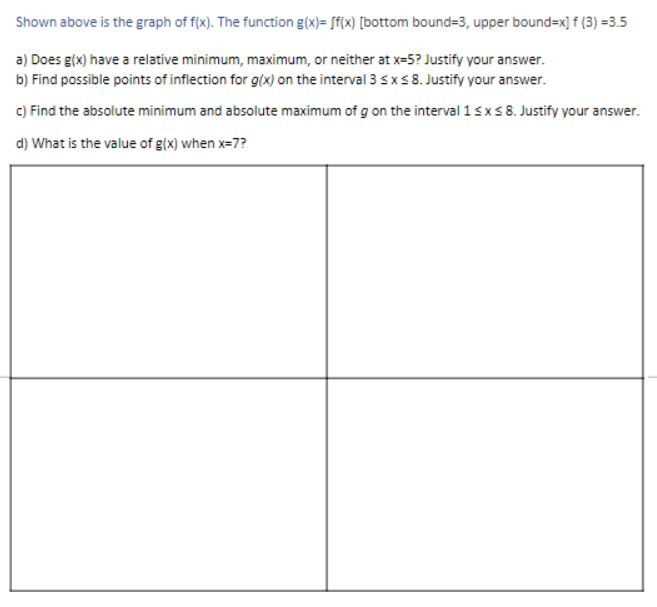
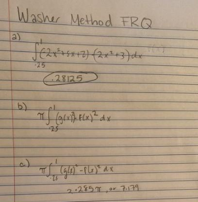

Volume of Solids - Washer Method
| Limits with Algebraic Manipulation | Chain Rule | Extreme Value Theorem | Right Riemann Sums | Antiderivatives | Volumes of Solids (Washer Method) | Back to Home |
Made by: Kara Ho and Akshita Ramesh, AP Calculus Block 5, Mrs. Burns' Class
Welcome to your fifth mission: Solving Limits with Algebraic Manipulation! Here's a brief overview of what you'll need to do to complete your mission:
The washer method is a form of finding volumes of cross sections rotated around an axis. The formula finds the integral of a cross section of two graphs, and the gap between that and the axis. The washer method is used when finding the volume of shape around an axis, when the shape does not touch the axis of rotation.
To solve using the Washer Method, use the following steps:
Let's try some practice problems!
1. Find the value of functions x²+3 and the y=7 rotated around the x-axis
To see how the question is solved, see the procedures below!
|  |
Now lets try a free-response question! To check your answers, click the picture on the right
|  |  |